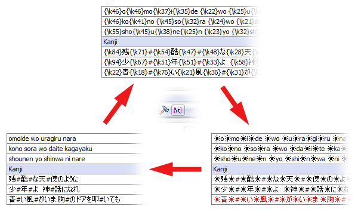
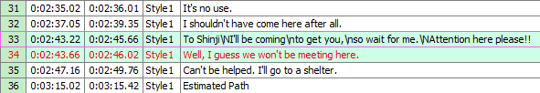

- 打开字幕
- 支持的格式
- 从MKV中读取字幕
- 导入纯文字脚本
- 编辑字幕
- 字幕编辑框
- 字幕栏
开发Aegisub的目的是编辑字幕。本页面将会就字幕的基本文本编辑进行一系列的讲解；若想了解更多关于字幕排版的信息，请看 排版。关于字幕的时间轴编辑，另见 载入音频。
打开字幕
在 文件 菜单中，提供了4种打开/创建字幕的方式：
- 新建字幕
- 创建一个新的、空白的字幕文件(同时也会关闭当前文件)。
- 打开字幕
- 打开一个现有的字幕文件，或者从多媒体容器文件 Matroska
container file 中导入字幕。(常见的Matroska媒体是后缀名为“.mkv”的视频文件)
- 打开字幕并指定编码
- 打开字幕的同时手动指定编码，Aegisub将以您指定的编码格式读取字幕文件。 通常情况下Aegisub能够自动检测并选定编码，因此无需使用这项功能。但如果您的字幕文件内包含不常见格式的编码(或多种编码混杂于同一文件中)，则可能导致无法正常读取，这时就需要您自行指定。
- 从视频中打开字幕
- 打开封装于视频文件中的字幕。这种方式目前只适用于Matroska视频文件(即mkv格式的视频)。
- 打开 自动保存的字幕
- 打开由Aegisub自动保存功能所生成的字幕文件。当Aegisub程序发生崩溃而您尚有未保存的更改时，或当您想要查看字幕文件的历史版本时，这项功能将会非常实用。
如果程序经过检测后，认定您所打开的字幕文件不是以Unicode方式编码时，Aegisub就会试图猜测它的编码方式。若依然无法确定，Aegisub将会列出几种可能的编码方式供您选择；若打开后出现乱码现象，或存在其他形式的错误，请尝试以另外的编码方式重新打开文件。
支持的格式
Aegisub支持读取下列字幕格式：
- Advanced Substation Alpha，也称SSA v4+ (.ass)
- Substation Alpha v4 (.ssa)
- SubRip 文本 (.srt)
- MPEG4 Timed Text(情况良好时能够有限兼容，糟糕时则可能发生崩溃)，也称
ISO/IEC 14496-17，MPEG-4 Part 17；或者是TTXT (.ttxt)。
- MicroDVD (.sub)
- “台本”形式的纯文本文件(详见下方)
从MKV中读取字幕
您也可以直接从多媒体容器文件(.mkv)中读取字幕。支持以下编解码标识(CodecID)：
- S_TEXT/UTF8 (SRT)
- S_TEXT/ASS (ASS/SSA v4+)
- S_TEXT/SSA (SSA v4)
导入纯文字脚本
Aegisub也支持导入对话格式的纯文本文件。例如：
Actor 1: Well do I understand your speech, yet few strangers do so.
Why then do you not speak in the Common Tongue,
as is the custom in the West, if you wish to be answered?
# TL check: The above seems to be a quote from the lord of the rings, look it up later
Actor 2: What are you babbling about?
导入该文本后将会产生5行字幕，其中第四行为注释行。前三行的说话人被设置为"Actor1"，第五行说话人被设置为"Actor2"(注释行的说话人一栏为空白)。
当您直接打开记事本文档(.txt)时，Aegisub将会询问您要选用哪种字符来表示“说话人分隔符”和“注释开端”。在上述例子中，用冒号(半角)(":")标记“说话人分隔符”，用井号标记“注释开端”("#")。
编辑字幕
在Aegisub中有两块区域可用于编辑字幕：字幕编辑框（您输入和编辑文本的地方）与字幕栏。
在这两处对字幕进行的更改会作用于选定的所有行，而不仅仅是呈现在字幕编辑框中的那一行。
字幕编辑框
字幕编辑框是一个单纯的编辑区域，它附有一系列操作功能。分别是：
- 将该行标记为注释行。注释行在视频中不会显示。
- 该行的 样式。
- 该行的说话人名称。这对于字幕本身并无影响，但能为编辑的过程提供便利。
- 该行的特效。此处可以应用一些预置的特效，但由于渲染器的支持存在诸多缺陷，因此推荐使用 特效标签。这一项通常应用于自动化脚本的元数据区域。
- 当前字幕中的最长行的字符数。
- 该行的层次编号。如果两行或多行字幕的定位发生重合，导致它们堆叠显示，那么该项将会控制这些行的层次关系；层次编号较大的行拥有更高的优先级，也就是说它会显示在编号较小的字幕的上方。
- 该行的开始时间。
- 该行的结束时间。
- 该行的持续时间。修改此处的数值，该行的结束时间将会随之发生变化。
- 该行的左边距。“0”代表使用样式中设置的数值。
- 该行的右边距。“0”代表使用样式中设置的数值。
- 该行的垂直边距。“0”代表使用样式中设置的数值。
- 在光标位置插入“加粗(Blod)”特效标签(
\b1)。如果文本已经被加粗，则会相应地插入“取消加粗”的特效标签(\b0)。
- 在光标位置插入“斜体(Italic)”特效标签(
\i1)。如果文本已经是斜体，则会相应地插入“取消斜体”的特效标签(\i0)。
- 在光标位置插入“下划线(Underline)”特效标签(
\u1)。如果文本已经带有下划线，则会相应地插入“取消下划线”的特效标签(\u0)。
- 在光标位置插入“删除线(Strikeout)”特效标签(
\s1)。如果文本已经有删除线，则会相应地插入“取消删除线”的特效标签(\s0)。
- 打开字体选择窗口，选定字体后将会插入一个“字体名称”特效标签(
\fnFontName)；同时，字体窗口中所应用的其他属性标签(例如字号、加粗等)也会同时插入。
- 打开 颜色选择器 选择颜色后，在光标位置插入一个“主要颜色”特效标签(
\c)。
- 打开 颜色选择器 选择颜色后，在光标位置插入一个“次要颜色”特效标签(
\2c)。
- 打开 颜色选择器 选择颜色后，在光标位置插入一个“边框颜色”特效标签(
\3c)。
- 打开 颜色选择器 选择颜色后，在光标位置插入一个“阴影颜色”特效标签(
\4c)。
- 移动至下一行。若当前选定的是字幕栏中的最后一行，则会创建新的一行。需要注意的是，与先前版本的Aegisub不同，您所作的更改无需手动点击“提交”便会被自动应用。
- 更改时间的定位方式，“按照时间”或是“按照帧数”(后者仅限载入视频之后才可用)。注意，更改此项不会影响已经存储在脚本中的时间码信息。
显示原始字幕
勾选“显示原始字幕”，就会将字幕编辑框切换为以下模式：

编辑框的上半部分不可进行操作，它会显示当前行的原始内容。这里的几项功能在翻译文本或编辑字幕时非常实用。
- 还原
- 恢复编辑框下半部分内容至上半部分的状态。如果您想要一键撤销先前所有的改动，就会非常便捷。
- 清除
- 清空该行。
- 清空文本
- 清空该行文本，但会保留所有的特效标签。这有助于您在保留原先排版方式的同时，将字幕翻译替换成另一种语言。
- 插入原文
- 在光标处插入原始内容。
背景菜单
在字幕编辑框的任意位置单击鼠标右键，您就会看见如下菜单：
全选、复制、剪切和粘贴等基本功能应有尽有。
- 拼写检查器
- 如果您在一个被检测为拼写错误的单词处(绿色波浪线标注)单击鼠标右键，词典就会向您提供一些近似的词汇，便于您进行修正。您也可以在菜单中设置拼写检查语言，或者向词典中添加无法正确识别的单词。若想了解更多有关信息，请参阅 拼写检查器 页面。
- 词典
- 提供与所选单词接近的备选项。
- 分割行
- 以光标位置为界，将其前后部分分割为两行。根据不同需求，设有3种分支功能。 “保留原计时”将会生成与原始行的计时相同的两行；“概略计时”会依据光标前后字符数量进行估算，从而分配每一行的时间；“按视频帧”则会将光标之前部分的结束时间设为当前帧的前一帧，光标之后部分的开始时间设为当前帧(“按视频帧”同样只有在载入视频后才可用)。
字幕栏
字幕栏会呈现整个字幕文件中包含的所有行(包括注释行及其他行)。
一些常用的操作:
- 在字幕栏中将某行的位置进行上移/下移。选择要移动的行，按住Alt键，同时按↑或↓键。
- 多选行，有以下两种方式可供选择。
Ctrl方式：按住Ctrl键后，每点击一次就多选定一行(点选)，逐渐累加。
Shift方式：按住Shift键后，先选定起始行，再选择最终行，则它们之间的所有行都会被一次性选中。
- 在按住Alt键的情况下点击字幕行，就只会改变字幕编辑框内显示的内容，而不会改变对某行的选定状态。
- 打开 字幕 菜单，在 选择行 对话窗口中可以依据不同条件对字幕行进行筛选和索引。
- 若想要改变 特效标签 在字幕栏中的缩略显示方式，可在工具条中选择"切换标签隐藏方式"(默认情况下，每一组特效标签用一个小太阳的符号表示)。

不同的字幕行有不同的颜色(并且是可以自定义的)，用以表示不同的含义；若想要了解具体的对应关系，请浏览 字幕栏设置页面 。
默认情况下，以下栏目会在字幕栏中显示：
- #
- 行编号。
- 开始时间
- 该行的开始时间。
- 结束时间
- 该行的结束时间。
- 样式
- 该行的样式。
- 文本
- 该行的文本内容(即在视频上显示的内容)。
如果字幕中的任意一行应用了下列栏目，则在字幕栏中也会显示(未设置时默认不显示)：
- 层次编号
- 该行的层次编号。
- 说话人
- 该行的说话人。
- 特效
- 该行使用的特效。
- 左
- 该行的左边距。
- 右
- 该行的右边距。
垂直
：该行的垂直边距。
您也可以在字幕栏最上方的表头处单击鼠标右键，自行设定想要显示的栏目。
在字幕栏内的任意一行上单击鼠标右键，将会出现以下菜单(在别的菜单中也可找到对应功能):
- 插入(之前/之后)
- 在所选定行的之前/之后插入空白行。空白行默认的开始时间为0:00:00.00，结束时间为0:00:05.00。
- 以视频时间插入(之前/之后)
- 与上面的功能类似，不过新插入行的开始时间将被设置为视频的当前帧。只有在载入视频之后才能使用此功能。
- 重复行
- 对选定的行进行复制(可同时操作多行)。
- 以当前帧前分割行
- 分割选定的行(可同时操作多行)。分割后，原始行的结束时间将被设置为当前帧的前一帧，生成行(包含分割部分的行)的开始时间则被设为当前帧。在进行逐帧排版，或在场景切换过程中为使某行正确呈现而不与另一不可见行发生冲突，应使用此功能。只有在载入视频之后才可用。
- 以当前帧后分割行
- 与上面的功能类似，区别在于，被分割出来的是该行内位于当前帧之后的部分(就时间点而言)，而不是之前的部分；如此一来，原始行的开始时间将会被设置为当前帧的后一帧，生成行(包含分割部分的行)的结束时间则被设为当前帧。在对字幕进行倒序逐帧(从最后一帧至第一帧)排版时，应使用此功能。
- 分割行(按卡拉OK)
- 根据卡拉OK特效标签(
\k及其同类型标签，如\K和\kf等)的设置，按音节/单字对该行进行分割，分割后卡拉OK标签会被删除。新生成的第一行开始时间与原始行相同，结束时间=原始行的开始时间+第一个音节/单字的持续时间；新生成的第二行的开始时间=第一行的结束时间；依此类推。
- 交换行
- 交换所选定的两行(在字幕栏中)的位置。
- 合并行(保留首行)
- 对两行或多行进行合并，且仅保留第一行的文本，其余行的文本会被删除。生成行的开始时间和结束时间分别为被合并各行中最早的开始时间和最晚的结束时间。只有在同时选定至少两行时，此功能才可用。
- 合并行(连接)
- 与上面的功能类似，不过与此同时会将各行的文本进行连接。合并后，各原始行的文本之间会自动加入一个半角空格。
- 合并行(视为卡拉OK)
- 相当于 分割行(按卡拉OK) 的逆操作，也就是在 合并行(连接) 的基础上，按照合并之前各行的持续时间加入
\k标签。
- 使时间连续(改变开始/结束时间)
- 调整所选定行的时间，使得每一行的结束时间都与下一行的开始时间相同(即两行之间将会无缝衔接)。如果所选定的行拥有与之相邻的行，则更改开始时间时会依据前一行的结束时间，更改结束时间时会依据后一行的开始时间。只有在同时选定至少两行时，此功能才可用。
- 重组行
- 如果两行或多行中包含相同的文本部分，就会为每一个文本片段单独生成一行，从而避免重复。这项功能主要应用于DVDrip字幕的修正，常见的情况如下图所示：

进行重组行操作之后，就变为这样：

- 创建音频剪辑
- 以所选行中最早的开始时间和最晚的结束时间为首尾创建音频剪辑，并以未压缩的wav格式输出。只有在载入音频后才能使用此功能。
- 剪切行/复制行/粘贴行
- 以行为单位进行剪切/复制/粘贴。被选定的行将以纯文本的形式被复制，您可以自由地将其粘贴至文本编辑器、聊天软件、网页浏览器或另一个正在运行的Aegisub进程等等。
- 选择性粘贴…
- 打开 选择性粘贴 对话框，可在其中进行多种操作。
- 删除行
- 删除选定的行。